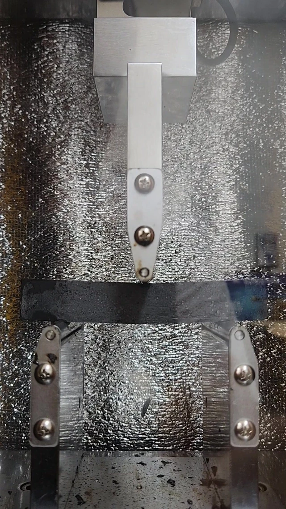

Asphalt Materials & Binders
- Asphalt binder rheology and low-temperature performance
- Epoxy asphalt mixtures and performance evaluation
- Recycled asphalt binders and rejuvenators
- Binder production under changing crude oil supply conditions
Pavement Materials Researcher · Civil Engineer
Pavement engineering researcher with experience in asphalt binders, epoxy asphalt mixtures, recycled asphalt systems, field pavement performance, and materials standardization—complemented by experimental validation work on high-angle ground anchors and retaining structures.

Academic Profile
I am a pavement materials researcher and civil engineer with a B.S. in Civil Engineering from Seoul National University of Science and Technology. My primary research focus is pavement engineering, particularly asphalt materials, binder behavior, recycled asphalt systems, and performance-based evaluation.
My research experience connects laboratory testing, field investigation, engineering data interpretation, and technical communication. My professional work with geotechnical retaining systems complements this focus by adding instrumentation-based testing, load-transfer interpretation, and structural behavior validation.
Education B.S. in Civil Engineering, Seoul National University of Science and Technology, South Korea
Research Interests
Selected Research Experience
Pavement Materials
Participated in research on the low-temperature flexural behavior of high-viscosity asphalt binders. Contributed to laboratory work, experimental data organization, research documentation, and journal manuscript preparation.
Mixture Design
Contributed to mixture design and performance testing for epoxy asphalt mixtures, including laboratory evaluation, research documentation, technical reporting, and preparation of a journal manuscript.
Field Evaluation
Participated in field performance monitoring of a porous asphalt pavement test section through permeability testing, skid resistance testing, FWD-based evaluation, data organization, and technical reporting.
Standardization
Supported a national standardization research project on anti-icing asphalt mixtures through technical report preparation and assistance with drafting proposed material and performance requirements for a Korean Standard.
Binder Systems
Investigated asphalt binder production and stiffness under changing crude oil supply conditions and evaluated recycled asphalt binder behavior with petroleum-based and bio-based rejuvenators through data interpretation, technical review, and manuscript preparation.
Geotechnical Validation
Participated in experimental validation of retaining systems using high-angle ground anchors. Work included tensile testing, instrumentation, load-transfer interpretation, displacement monitoring, technical reporting, and conference-poster preparation.
Experiments · Observations · Interpretation
Research questions and my contributions, illustrated through testing, measurement, and observed specimen behavior.

An Overlay test setup linking the mounted specimen, observation camera, and surface-image display.
How do bridge-deck paving materials respond to repeated displacement?
I prepared an LMC reference and mastic asphalt specimens from three suppliers, performed TxDOT Overlay tests, and analyzed load–cycle data alongside crack progression for a technical report.
I interpreted load degradation together with surface observations. The sequence below documents visible crack progression during one test.

A cylindrical asphalt mixture specimen positioned for indirect tensile loading.
How can mixture strength and resistance to raveling be evaluated?
I designed epoxy asphalt mixtures, prepared specimens, and performed Marshall stability, indirect tensile strength (ITS), Cantabro loss, and theoretical maximum specific gravity (Gmm) tests. I maintained experimental records and contributed to technical reports and manuscript preparation.
Strength and raveling resistance describe different aspects of mixture performance. Cantabro testing uses specimen mass before and after testing to determine mass loss, alongside observations of surface condition.

A representative specimen in the pre-test condition.

A representative specimen in the post-test condition.
Representative specimens from separate photographic records. Source: epoxy asphalt mixture design and performance report (2024), Photos 10–12.

A water-column setup and timed measurements on an in-service porous asphalt test section.
How is pavement performance measured in service?
During 2023–2024, I assisted with permeability, skid-resistance, and FWD measurements, technical reporting, and project documentation on the Jeongeup–Taein section of the Honam Expressway.
The photograph shows the test location, water-column setup, and timing of measurements on the pavement.

A video still showing the beam specimen, central loading point, and two supports inside the chamber.
Is the −20°C test condition appropriate for evaluating high-viscosity binder flexural behavior?
I prepared binder specimens and supported low-temperature three-point bending tests (KS F 2491). I assisted with statistical analysis and manuscript preparation and checked consistency across laboratory records, datasets, and reported results.
This work connected specimen preparation and loading geometry with traceable experimental records, analysis, and reporting.
Methods & Testing
Research Outputs
Published article titles and DOI identifiers link to their persistent records.
Published 2023
* Corresponding author. Korean title: 통계분석 기법을 적용한 고점도 아스팔트 바인더의 저온 휨 특성 연구.
Published 2024
* Corresponding author. Korean title: 에폭시 아스팔트 혼합물의 국내 도로포장 적용성 검토.
Published 2026
* Corresponding author. Korean title: 원유 수급 변화에 따른 아스팔트 바인더의 생산과 강성에 관한 기술적 고찰.
Conference Presentations
Presented 2025
A Study on the Load Transfer Mechanism of High-Inclination Ground Anchors Applied to TPS and TEA Methods through Experimental InvestigationPresented 2026
Mock-up Tests on Load-Transfer Mechanism of High-Inclination Ground Anchors in TPS and TEA Systems under Varying Installation AnglesProfessional Experience
Technical Skills & Contributions
Contributed to the Korean translation of the Japanese technical publication 『환경을 배려한 포장기술』 on environmentally conscious pavement technology.
CV & Contact
CV available upon request.
I welcome academic communication related to pavement engineering, asphalt materials, recycled asphalt systems, field performance evaluation, and infrastructure materials research.
poiiopoostar@naver.com